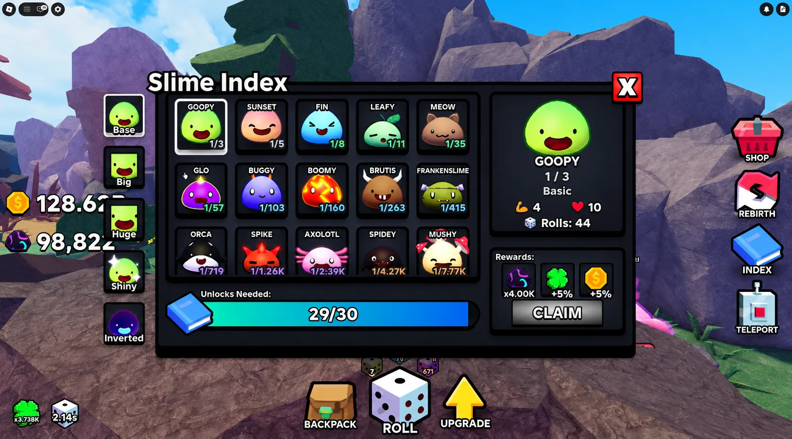
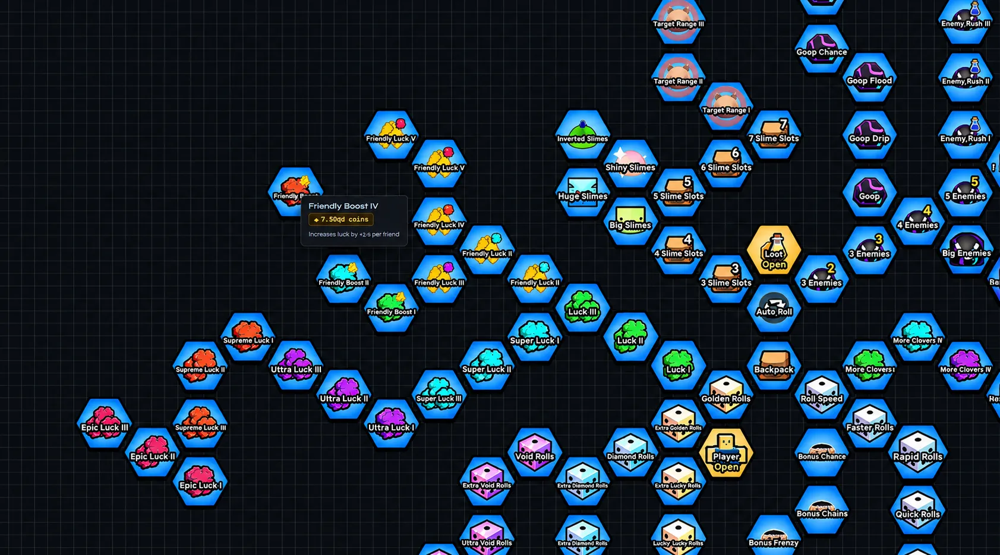
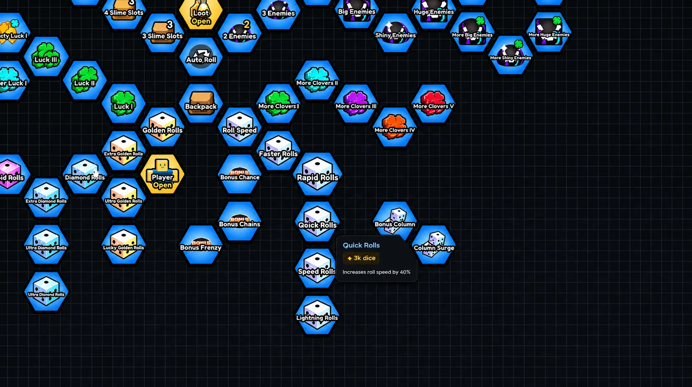
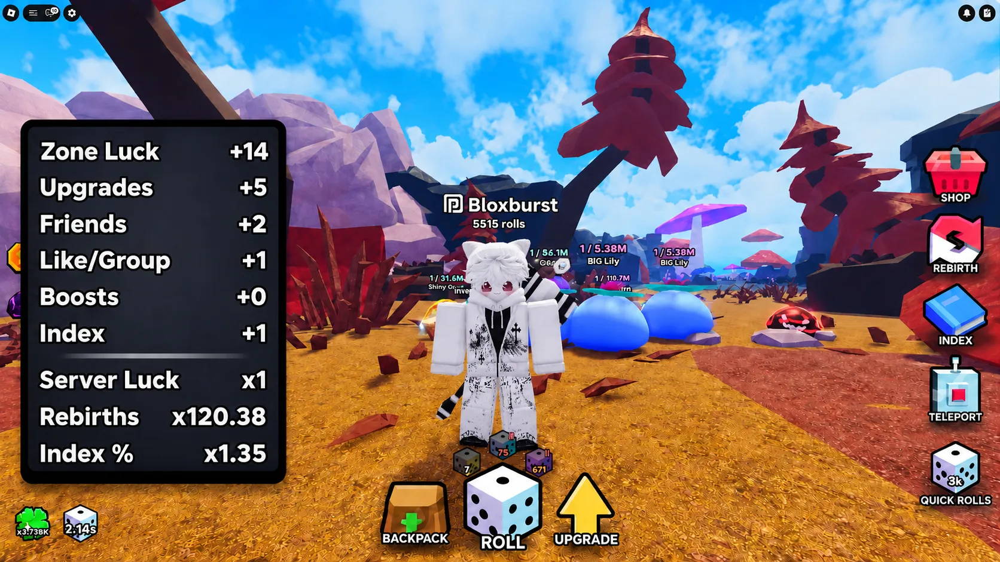
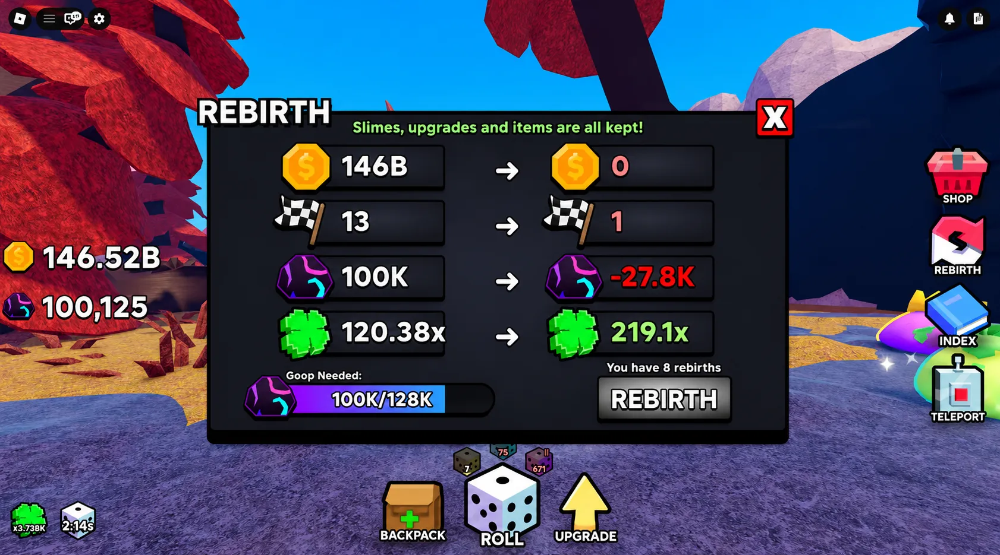
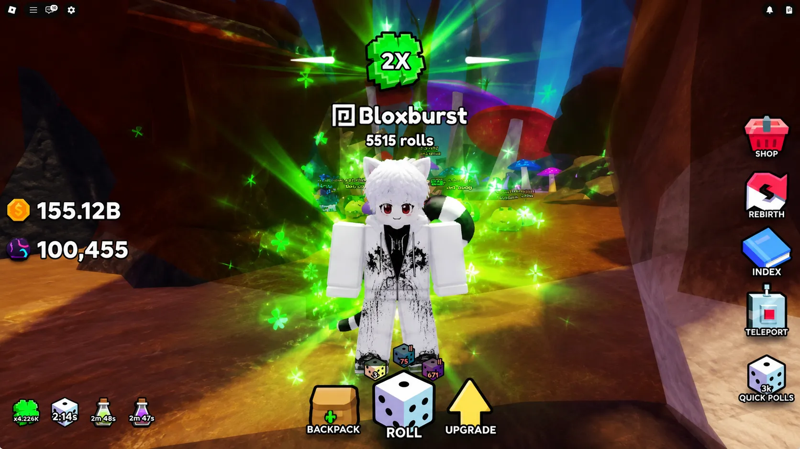

💎 Do This NOW For MAX LUCK!!
in Slime RNG (2026)


Maximizing luck in Slime RNG isn't about hoping for the best — it's about systematically layering every available multiplier. From permanent Index bonuses to social-friendly luck stacking, roll speed optimization, and strategic goop farming, this guide breaks down every proven method to push your luck multiplier to its absolute peak. Whether you're chasing inverted variants or leaderboard-exclusive drops, these actionable steps will transform your RNG experience from random chance to calculated success.
📑 Table of Contents
- 1. Index Completion: Your Permanent Luck Foundation
- 2. Friendly Luck: Maximize Social Multipliers
- 3. Roll Speed & Dice Upgrades: Mathematical Advantage
- 4. Server Luck Boosts: Community Power-Ups
- 5. Goop Farming: The Rebirth Engine
- 6. Bonus Chance Strategy: Timing Over Luck
- 💡 Pro Insight: Holistic Luck Stacking
- ❓ Frequently Asked Questions
Index Completion: Your Permanent Luck Foundation
The Index system is your most reliable source of permanent luck boosts. By completing entries across all tiers—Base, Big, Huge, Shiny, and Inverted—you unlock cumulative multipliers that persist through every rebirth. This isn't optional grinding; it's foundational progression.
Strategic Index Completion
Missing low-luck slimes in your Index? Use the Manual Luck Override setting wisely. Temporarily set your luck to a low value (e.g., 1-5) to intentionally roll common variants needed for Index completion. Once filled, disable the override to restore your full multiplier for rare hunting.
Crafting-Exclusive Variants
Some slimes are only obtainable through crafting, not random rolls. Check your Index regularly for craftable gaps, then use recipe guides to fill them. Each completed slot compounds your permanent luck, creating a snowball effect for future rare acquisitions.
Index Priority: Focus on completing entire families (Normal → Big → Huge → Shiny → Inverted) before chasing random high-rarity rolls. Systematic completion yields faster permanent multiplier growth.

Figure 1: Complete all Index tiers (Base → Big → Huge → Shiny → Inverted) for permanent luck multipliers. Use Manual Luck Override only for filling common slime gaps.
Friendly Luck: Maximize Social Multipliers
Solo play leaves massive luck potential untapped. The Friendly Luck upgrade tree provides multiplicative bonuses based on friends in your server, scaling from 1.5x → 2x → 2.5x per friend as you invest upgrades.
Optimal Server Composition
To maximize Friendly Luck, coordinate with 5-6 active friends in a VIP or populated server. Each added friend compounds your multiplier, potentially boosting total luck by 50-70%. This isn't a minor bonus—it's a core requirement for endgame rare slime hunting.
Upgrade Allocation Strategy
Prioritize Friendly Luck upgrades early in your progression. The ROI is exceptional: social bonuses multiply with your base luck, Index rewards, and equipment modifiers. Players who delay this system effectively cap their luck ceiling.
Community Coordination
Join the official Slime RNG Discord to find farming groups, schedule VIP sessions, and synchronize rebirth cycles. Consistent group play ensures your Friendly Luck bonus is always active at peak efficiency.
Common Mistake: Relying on random public servers for Friendly Luck. Population fluctuates, causing inconsistent multiplier scaling. Build a core group of 4-6 dedicated players for reliable optimization.

Figure 2: Upgrade Friendly Luck tree to maximize per-friend bonuses (1.5x → 2x → 2.5x). A full 6-friend server can boost total luck by 50-70%.
Roll Speed & Dice Upgrades: Mathematical Advantage
Luck isn't just about multiplier values—it's about attempts per minute. Faster roll speed means more opportunities to hit rare outcomes within the same timeframe, mathematically increasing your statistical success rate.
Roll Speed Priority Framework
Before heavily investing in Bonus Chain mechanics, fully upgrade your roll speed. This creates a high-volume grinding window where even modest luck multipliers yield frequent rare rolls due to sheer attempt frequency.
Dice Tier Progression
Upgrade your dice tiers systematically: Normal → Big → Huge → Shiny → Inverted. Each tier not only improves base roll quality but also unlocks access to higher-rarity slime pools. Don't skip tiers—each builds the foundation for the next.
Backpack Boost Management
Always keep a luck-boosting item active in your backpack during grinding sessions. These temporary multipliers stack with your permanent bonuses, creating short-term power spikes ideal for targeting specific rare variants.
Speed Rule: Upgrade roll speed until you're rolling at least 2-3x faster than base speed. This dramatically increases your effective luck through volume, even before multiplier upgrades catch up.

Figure 3: Prioritize roll speed upgrades first, then progress through dice tiers (Normal → Big → Huge → Shiny → Inverted) for systematic improvement.
Server Luck Boosts: Community Power-Ups
Server-wide luck boosts are among the most powerful temporary multipliers in Slime RNG. These events, often hosted by developers or high-tier players, can range from 2x to extreme values during special occasions.
Finding Boosted Servers
Join the official Slime RNG Discord server to monitor announcements for boosted sessions. Community members frequently organize AFK-friendly servers where everyone benefits from active luck multipliers without intensive grinding.
Strategic Timing
When a server boost is active, prioritize rolling over other activities. The temporary multiplier compounds with your existing luck, creating a narrow but highly valuable window for acquiring otherwise unattainable rare slimes.
Developer Events
Watch for scheduled admin abuse events or update celebrations. These often feature massive luck boosts (sometimes exceeding 1000x) as promotional incentives. Participating early ensures you maximize rewards before server populations peak.
Boost Caution: Server luck boosts are temporary. Don't delay core progression waiting for one—use them as acceleration tools, not foundational strategies.

Figure 4: Server luck boosts (2x to 1000x+) appear in the UI during Discord-hosted events or admin abuse sessions. Maximize rolling during these windows.
Goop Farming: The Rebirth Engine
Goop is the backbone of your rebirth cycle, and rebirths directly fuel your permanent luck growth. Many players overlook goop upgrades, but they're essential for sustainable progression.
Goop Upgrade Priority
Invest in goop-generation upgrades early in each rebirth cycle. Higher goop yields accelerate your path to the next rebirth, which in turn grants permanent luck multipliers. This creates a positive feedback loop: more goop → faster rebirths → higher luck → better rolls → more goop.
Zone-Based Farming Efficiency
Focus on reaching deeper zones quickly. Late-game zones generate exponentially more goop per kill than early areas. Prioritize damage upgrades and coin generation to unlock high-yield zones faster, compressing your rebirth timeline.
Rebirth Timing Logic
Rebirth when you've maximized goop efficiency in your current zone. Don't reset prematurely just because the button is available. Calculate whether pushing one zone deeper would double your goop/min—if yes, farm it first before resetting.
Rebirth Rule: Aim to rebirth only when you can reach at least one zone deeper than your previous cycle. This ensures each rebirth meaningfully accelerates your luck progression.

Figure 5: Invest in goop upgrades early each cycle. Higher goop yields = faster rebirths = permanent luck multipliers. Focus on reaching deeper zones for exponential goop gains.
Bonus Chance Strategy: Timing Over Luck
Bonus chains are arguably the most effective way to acquire high-rarity slimes—but only when timed correctly. Many players chase bonus mechanics too early, wasting potential.
Prerequisite: Roll Speed First
Before investing heavily in Bonus Chance upgrades, fully maximize your roll speed. Faster rolls generate more bonus opportunities per minute, making your bonus chain investments exponentially more valuable.
Chain Building Technique
Focus on maintaining consistent roll streaks rather than spamming during low-luck periods. Bonus chains reward consecutive successful rolls, so patience and timing outperform brute-force grinding.
Resource Allocation Framework
- Early Game: Prioritize roll speed and base luck upgrades
- Mid Game: Begin investing in Bonus Chance after roll speed is maxed
- Late Game: Balance Bonus Chain with Friendly Luck and Index completion
- Always: Keep a luck boost item active during bonus-focused sessions
Common Mistake: Prioritizing Bonus Chance before roll speed. This creates infrequent, high-stakes attempts rather than consistent, volume-driven success. Master speed first, then layer bonus mechanics.

Figure 6: Bonus chains reward consecutive successful rolls. Max roll speed first, then invest in Bonus Chance upgrades for optimal chain-building frequency.
💡 Pro Insight: Holistic Luck Stacking
Maximum luck in Slime RNG isn't achieved by one perfect strategy—it's engineered through systematic layering. Complete your Index for permanent boosts, maximize Friendly Luck with a coordinated group, optimize roll speed for volume, leverage server boosts strategically, farm goop for faster rebirths, and time your bonus chains after foundational upgrades. Each system compounds the next. Players who ignore one bottleneck cap their entire progression chain. Track your multipliers, optimize holistically, and let the math work in your favor. Rare slimes aren't luck—they're engineered.
💬Leave a Comment
Have a question or feedback about Slime RNG? Send it to us!